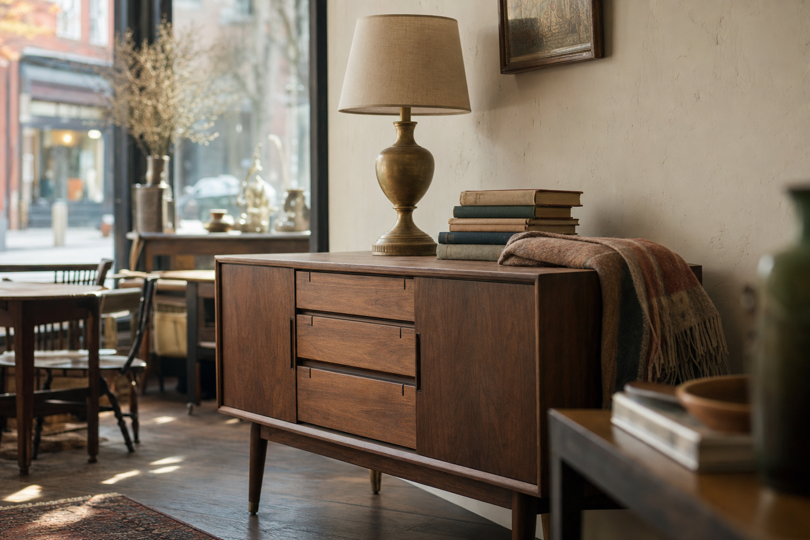
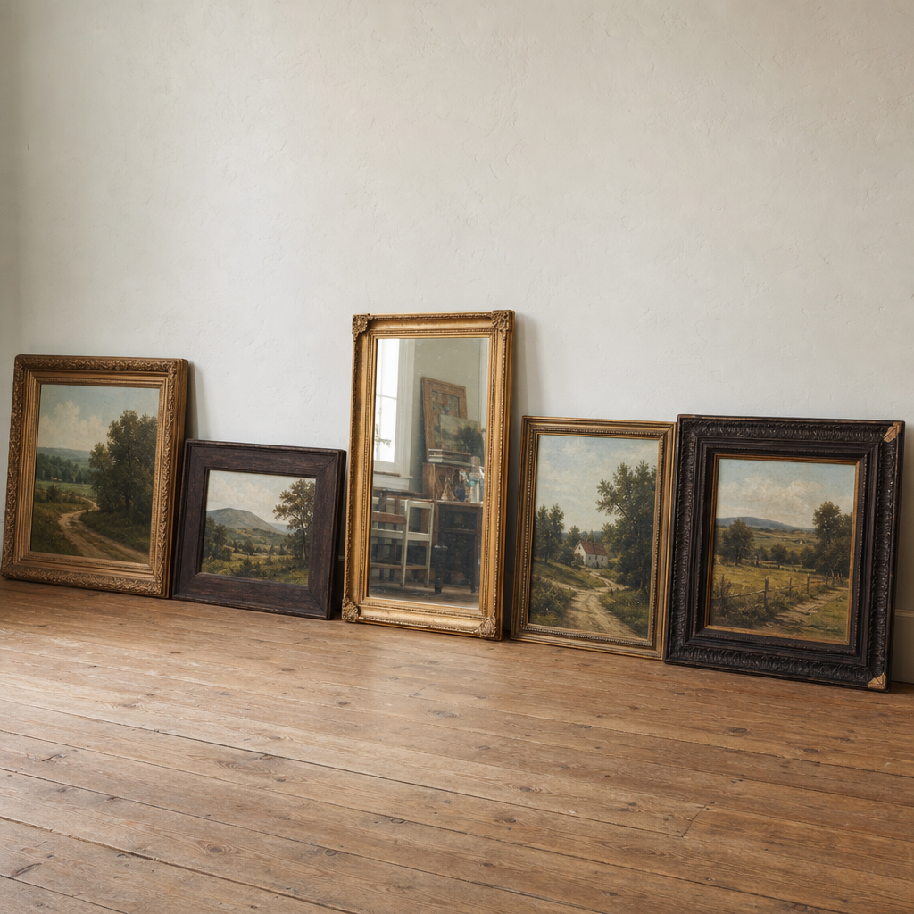
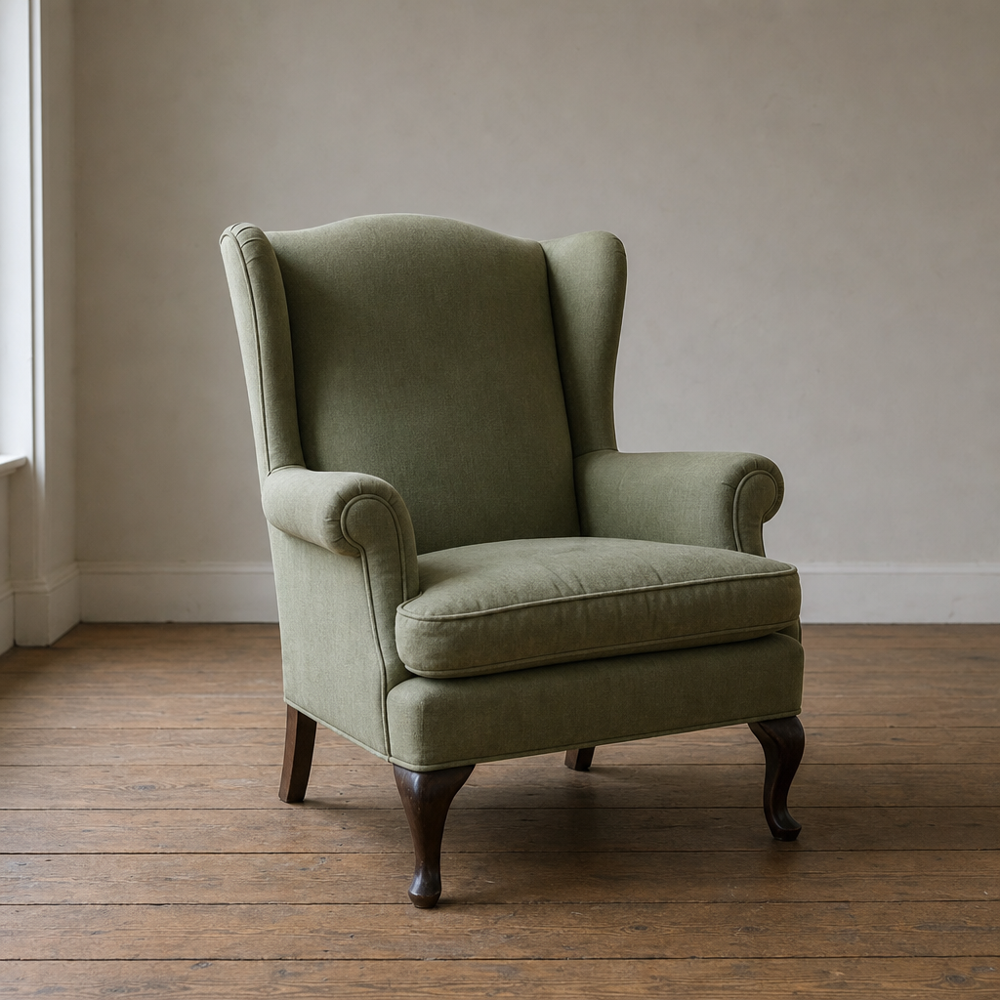
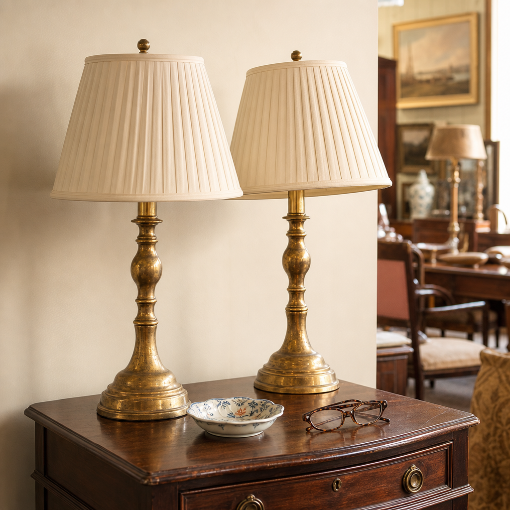
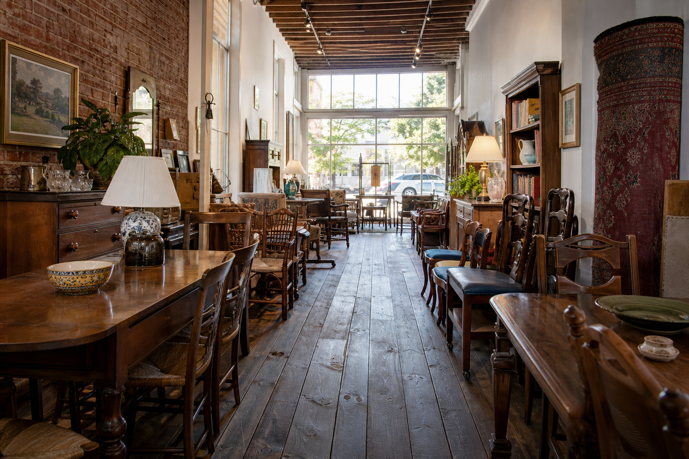

Somebody's good furniture, looking for its next house.
Household consignment in downtown Haymarket. Furniture, art, lamps and the
odd small strange thing, arriving all week from houses around Prince William County. Most of
what you see here will be gone by Saturday, which is the whole point of coming in.
15026 Washington St, Haymarket703-743-2346Closed Mondays

Walnut credenzaLot 412 · on the floor Sept 9$465
What came in this week
The floor changes daily. This page would be rebuilt every Tuesday, alongside Tuesday's Tea.

Framed landscapesLot 402 to 409 · on the floor Sept 10$40 to $220
A wall's worth of pastoral, plus one gilt mirror
Mostly Virginia scenes in mixed frames. The mirror is heavier than it looks, and yes,
we deliver.

Wingback chairLot 418 · on the floor Sept 12$180
Sage wingback, recently recovered
Queen Anne legs, tight frame, one of a pair. The other went in a day.

Brass lamps, pairLot 421 · on the floor Sept 13$95
Pair of brass lamps
Both rewired, both work. Shades have honest wear and are priced that way.
And thirty-three more since last Tuesday
Two estates and a downsize in Gainesville. Dining sets, a cedar chest, a walnut secretary,
and more lamps than we have outlets for. The rest of the week's intake would list here,
newest first, so a regular can tell in five seconds whether it is worth the drive.
Eight new consignorsLot 396 to 431 · week of Sept 15Come look
Sample listings. Lot numbers, dates and prices above are illustrative,
shown to demonstrate how a weekly arrivals page would work.
Or come at it by room
Most people walk in needing one
thing. Counts would update as pieces sell.
The shop runs on what other people bring in. If you are downsizing, settling an
estate, or just tired of looking at something, this is the door.
What we take
Furniture, art, lamps, mirrors, rugs, china and household decor in good condition.
If you are not sure, a photo answers it faster than a description.
How to start
Call the shop or email a few photos with rough dimensions. We will tell you what we can
take and when to bring it by.
What happens then
Your piece is tagged with its own lot number and the date it hit the floor, and it goes
out where people can see it. Terms are gone over with you in person before anything stays.
This concept page deliberately does not state a consignment split, a markdown schedule or
a payout timeline, because the shop has not published those anywhere and they are not ours to
invent. On a live site this is exactly where they would go, and it is the question consignors
ask first.

Washington Street, Haymarket
We are at 15026 Washington Street, in the row of storefronts in the middle of old
Haymarket. The farmers market sets up next door at 15000, and the Hilton Garden Inn and Red
House Tavern are directly across the street, so parking on a Saturday is a matter of
patience. Delivery and same-day pickup can be arranged for larger pieces. The entrance and
parking are wheelchair accessible, and we take cards, tap and checks.